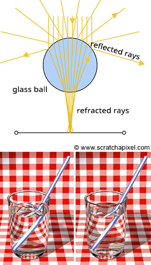

The other advantage of ray-tracing is that, by extending the idea of ray propagation, we can very easily simulate effects like reflection and refraction, both of which are handy in simulating glass materials or mirror surfaces. In a 1979 paper entitled "An Improved Illumination Model for Shaded Display", Turner Whitted was the first to describe how to extend Appel's ray-tracing algorithm for more advanced rendering. Whitted's idea extended Appel's model of shooting rays to incorporate computations for both reflection and refraction.

In optics, reflection and refraction are well known phenomena. Although a whole later lesson is dedicated to reflection and refraction, we will look quickly at what is needed to simulate them. We will take the example of a glass ball, an object which has both refractive and reflective properties. As long as we know the direction of the ray intersecting the ball, it is easy to compute what happens to it. Both reflection and refraction directions are based on the normal at point of intersection and the direction of the incoming ray (the primary ray). To compute the refraction direction we also need to specify the index of refraction of the material. Although we said earlier that rays travel on a straight line, we can visualize refraction as the ray being bent. When a photon hits an object of a different medium (and thus a different index of refraction), its direction changes. The science of this will be discussed in more depth later. As long as we remember that these two effects depend of the normal vector and the incoming ray direction, and that refraction depends of the refractive index of the material we are ready to move on.
Similarly, we must also be aware of the fact that an object like a glass ball is reflective and refractive at the same time. We need to compute both for a given point on the surface, but how do we mix them together? Do we take 50% of the reflection result and mix it with 50% of the refraction result? Unfortunately, it is more complicated than that. The mixing of values is dependent upon the angle between primary ray (or viewing direction) and both the normal of the object and the index of refraction. Fortunately for us, however, there is an equation that calculates precisely how each should be mixed. This equation is know as the Fresnel equation. To remain concise, all we need to know, for now, is that it exists and it will be useful in the future in determining the mixing values.

Figure 1: using optical laws to compute reflection and refraction rays
So let's recap. How does the Whitted algorithm work? We shoot a primary ray from the eye and the closest intersection (if any) with objects in the scene. If the ray hits an object which is not a diffuse or opaque object, we must do extra computational work. To compute the resulting color at that point on, say for example, the glass ball, you need to compute the reflection color and the refraction color and mix them together. Remember, we do that in three steps. Compute the reflection color, compute the refraction color, and then apply the Fresnel equation.
-
First we compute the reflection direction. For that we need two items: the normal at the point of intersection and the primary ray's direction. Once we obtain the reflection direction, we shoot a new ray in that direction. Going back to our old example, let's say the reflection ray hits the red sphere. Using Appel's algorithm, we find out how much light reaches that point on the red sphere by shooting a shadow ray to the light. That obtains a color (black if it is shadowed) which is then multiplied by the light intensity and returned to the glass ball's surface.
-

Now we do the same for the refraction. Note that, because the ray goes through the glass ball it is said to be a transmission ray (light has traveled from one side of the sphere to other; it was transmitted). To compute the transmission direction we need the normal at the hit point, the primary ray direction, and the refractive index of the material (in this example it may be something like 1.5 for glass material). With the new direction computed, the refractive ray continues on its course to the other side of the glass ball. There again, because it changes medium, the ray is refracted one more time. As you can see in the adjacent image, the direction of the ray changes when the ray enters and leaves the glass object. Refraction takes place every time there's a change of medium and that two media, the one the ray exits from and the one it gets in, have a different index of refraction. As you probably know the refraction index of air is very close to 1 and the refraction index of glass is around 1.5). Refraction has for effect to bend the ray slightly. This process is what makes objects appear shifted when looking through or at objects of different refraction indexes. Let's imagine now that when the refracted ray leaves the glass ball it hits a green sphere. There again we compute the local illumination at the point of intersection between the green sphere and refracted ray (by shooting a shadow ray). The color (black if it is shadowed) is then multiplied by the light intensity and returned to the glass ball's surface
-
Lastly, we compute the Fresnel equation. We need the refractive index of the glass ball, the angle between the primary ray, and the normal at the hit point. Using a dot product (we will explain that later), the Fresnel equation returns the two mixing values.
Here is some pseudo code to reinforce how it works:
One last, beautiful thing about this algorithm is that it is recursive (that is also a curse in a way, too!). In the case we have studied so far, the reflection ray hits a red, opaque sphere and the refraction ray hits a green, opaque, and diffuse sphere. However, we are going to imagine that the red and green spheres are glass balls as well. To find the color returned by the reflection and the refraction rays, we would have to follow the same process with the red and the green spheres that we used with the original glass ball. This is a serious drawback of the ray tracing algorithm and can actually be nightmarish in some cases. Imagine that our camera is in a box which has only reflective faces. Theoretically, the rays are trapped and will continue bouncing off of the box's walls endlessly (or until you stop the simulation). For this reason, we have to set an arbitrary limit that prevents the rays from interacting, and thus recursing endlessly. Each time a ray is either reflected or refracted its depth is incremented. We simply stop the recursion process when the ray depth is greater than the maximum recursion depth.